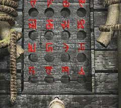
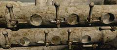

| 概要 | 地図 |
| 淡いヒント集 | ヒント集 | 的確なヒント集 |
| 攻略最短ルート |
| 場所選択に戻る |
シベリア
|

スピーカーの下についた箱にある穴には何をはめればよいか? ちょっと考えれば分かると思うが、すでにさしてある「象牙の鍵」である。 問題は、”どの穴に”であるが。それは、砂を流す装置に答えがある。 砂を流す装置には、「ユコール族のメダル」の内側の記号のみが描かれている。そこで、この装置が砂を落とす位置にある記号に注目して欲しい。 それは、画像のちょうどYのような記号(ひっくり返っているが)の位置である。 次に、箱に刻まれた記号を見て欲しい。箱には、メダルの外側の記号が記されているはずだ。 
つまり、画像のように一番下の左から2番目の位置に鍵をさして欲しい。 次にハンドルを回すと、スピーカーの位置が動き今までには聞こえなかったような風の音がするだろう。 
最後に、スピーカーの管に付けられたこの6つの穴である。 
この6つの穴を見て、すぐにピンと来るだろうが、船にあった紙に描かれた記号に関係している。記号と絵は直結しているのだが、問題は記号と装置の穴の対応である。

「・」は半開きで、「*」は前回。何も記されていない部分は完全に閉じているのを意味する。記号のように穴をふさいだら、横向きに取り付けられたレバーを引いてみよう。 マンモスを呼ぶ音が鳴り響き、あなたは旅の終わりを迎えるだろう。
| << 前へ |
|
| 場所選択に戻る |
| 概要 | 地図 |
| 淡いヒント集 | ヒント集 | 的確なヒント集 |
| 攻略最短ルート |
Syberia II
| 目次へ戻る | ページの上部へ |